How to use the portal from the team side: uploading reports, adding buyers, working a buyer's page, calls from the call logs, replaced calls, payments and the Finance figures, with answers to the questions buyers and the team ask most.
HHP, which picks them when uploading (chapter 3).Every screenshot was taken from the real portal, running on a test copy filled with made-up buyers (Northline Media, Bluepeak Insurance Leads, Harbor Health Partners, Summit Auto Leads, Crestline Solar and others). Names, emails, phone numbers and amounts are examples only. All figures were worked out by the portal itself, so the sums in this guide are the ones the portal really gives.
The portal is at portal.callstalk.com. Buyers, staff and admins all log in at the same address. What you see after logging in depends on your role.
| Task | Staff | Admin |
|---|---|---|
| Upload, view and delete customer reports (Call Summaries and billing reports) | Yes | Yes |
| Tell a buyer about a new Call Summary (email and Telegram) | Yes | Yes |
| Add a new customer (buyer) login with their price and opening balance, and give buyers nicknames | Yes | Yes |
| Open a buyer's page: their balance, daily bills, payments and recent activity | Yes | Yes |
| Enter calls for days with no call log, change prices and billing terms | Yes | Yes |
| Replace the calls a buyer asks about, and put them back | Yes | Yes |
| Record and delete payments | Yes | Yes |
| Enter a billing report's calls into a buyer's billing | Yes | Yes |
| Change a buyer's details, send them a new link, deactivate their login | Yes | Yes |
| Change anyone's role, delete logins, add staff or admin logins, open staff and admin logins | No | Yes |
| Logins list, Finance page, Audit Log, billing notification settings | No | Yes |
| Change your own photo and password | Yes | Yes |
The top bar shows your sections. Staff see Reports, Customers, New Customer and Settings. Admins see Logins, Finance, Audit Log, Reports and Settings. On a phone, the sections fold into a menu behind the button at the top right.
The limits for staff are kept by the server itself, not just hidden on the screen: a staff login that tries an admin-only action is refused.
An admin creates your login. You then get an email with a single-use setup link, which works for 7 days.
You need the app's code every time you log in. If you lose your phone or delete the app, ask an admin to reset your login. They will send you a new setup link.
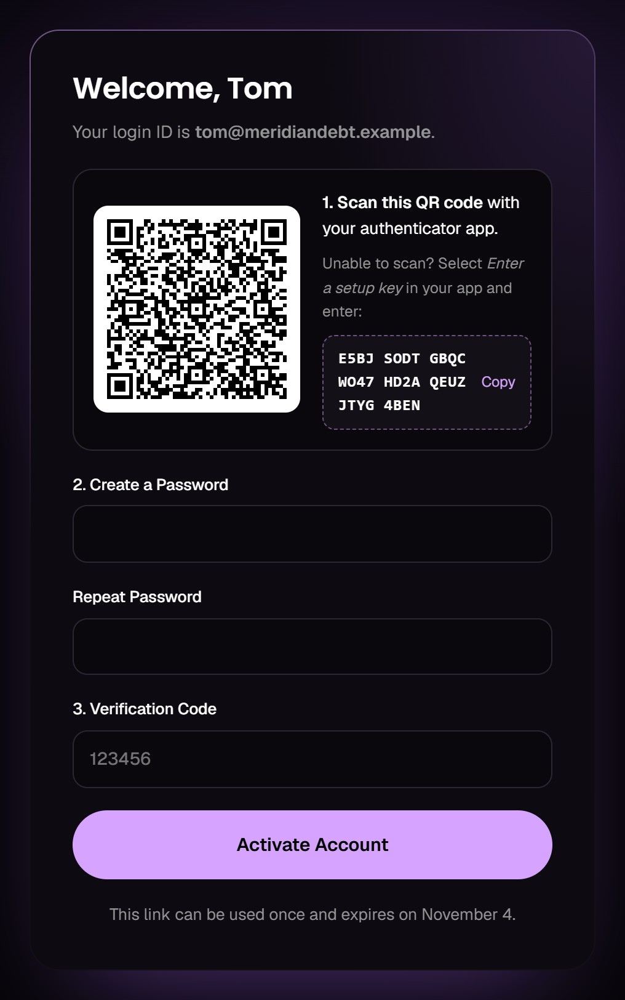
Staff land on Reports. Admins land on Logins.
If you forget your password, use Forgot password? on the login page. A reset link is emailed to you, and you'll need your authenticator code to finish.
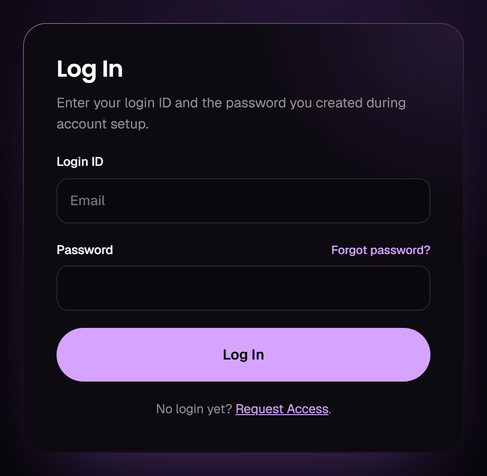
Staff and admins use this page the same way. Upload a buyer's reports on the left. The list on the right shows everything already uploaded.
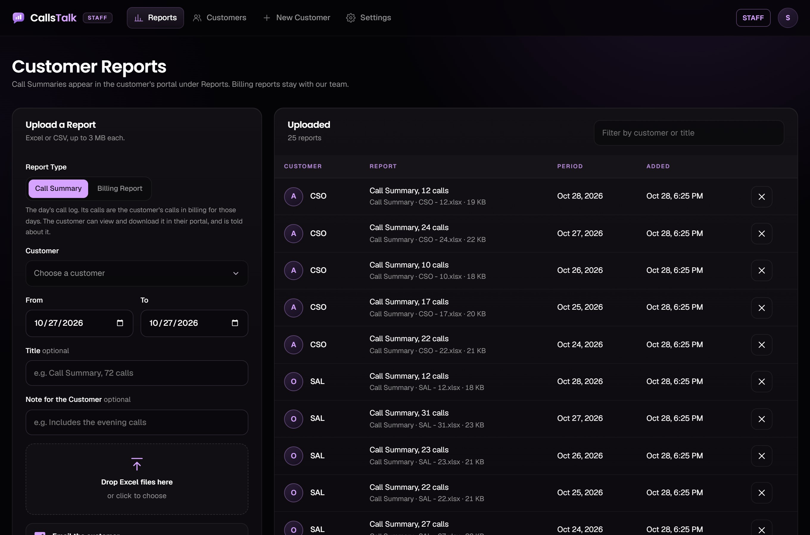
| Report Type | Who Sees It | What It's For |
|---|---|---|
| Call Summary | The buyer, in their portal under Reports, and the team | The day's call log as the dialer exports it: one call per row, with date and time, caller, number called, duration, status and who hung up. Its calls set the buyer's calls in billing for those days (chapter 6). The buyer can view and download it, and is told about it by email and Telegram. It is also where the calls a buyer asks to have replaced are chosen (chapter 7). |
| Billing Report | The team only. The buyer never sees it. | Our own record of a buyer's daily bills. Its calls can be entered into the buyer's billing while uploading (chapter 8). |
Once it's uploaded, the buyer's calls for those days are counted from it and their balance changes straight away (chapter 6).
Notifications. Email the customer sends one email to their Login ID: "Your report has been updated for (dates). You can view your Call Summary report from your portal", with a button that opens it. The file isn't attached. Send on Telegram sends the same message to their Telegram, but only if they connected it in their portal Settings. Otherwise the option is greyed out.
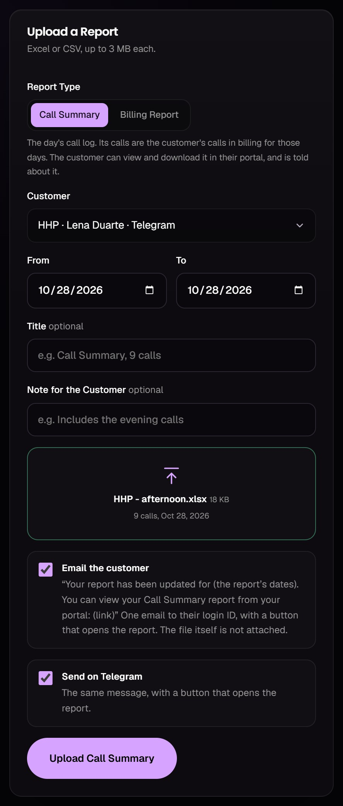
When it's done, a green message confirms the upload. If a notice could not be sent, the message adds what went wrong, for example Telegram not sent: ... The report is still uploaded either way.
A day's calls are every call in all of the buyer's Call Summaries for that day, so a corrected file uploaded next to the wrong one still counts the wrong one's calls. Delete the wrong report first, then upload the right one. Untick Email the customer if you don't want them told twice. A later export of the same day (an afternoon file after a morning one) is fine to upload as it is: only its new calls are added.
The count only shows when the file is laid out as the dialer exports it, with a date and time at the start of each call row (a header row above them is fine). Any other layout still uploads exactly as it is, but its calls are not counted and the buyer's billing doesn't change. Set From and To yourself.
Choose Billing Report under Report Type. Everything else works the same. The Excel Template button downloads a blank sheet in the layout buyers know from the old Telegram bill. It already has the formulas:
A billing report is filed for the team only. Nothing in the buyer's billing changes unless you tick Enter these calls in the customer's billing (chapter 8). Staff and admins can both do this.
The portal also recognises our own "Financial Overview" report layout, with one box per day titled like Oct 22, 2026 · Financial Overview.
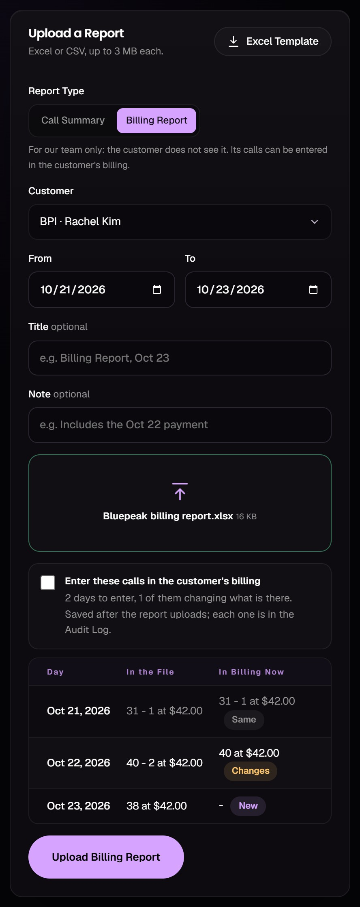
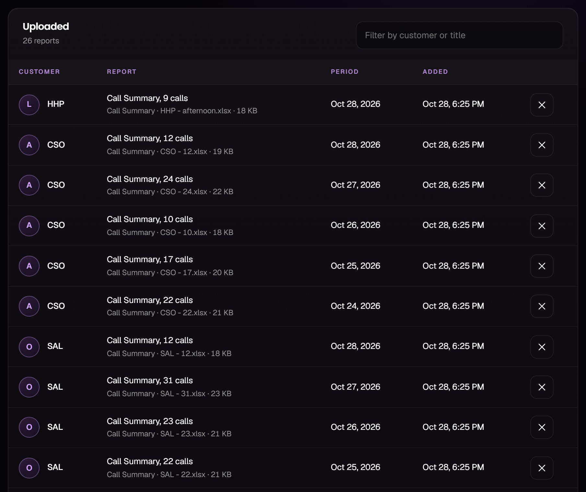
Every report, newest first, with the buyer, title, type, file name and size, period and when it was added. Type in Filter by customer or title to narrow it. To remove a report, press the × at the end of its row and confirm. A deleted Call Summary disappears from the buyer's portal straight away, and its calls come off their billing: those days are counted again from the buyer's other Call Summaries.
Staff have their own list of buyers under Customers. Admins find buyers in Logins (chapter 5).
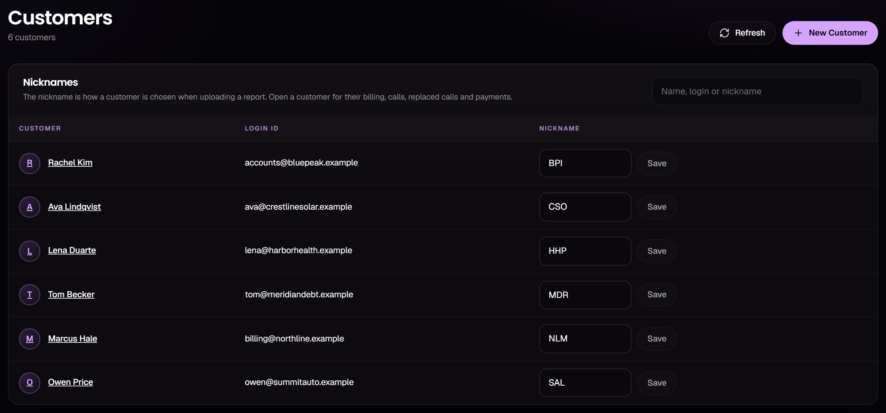
HHP, and press Save. The nickname is how the buyer is chosen when uploading. No two buyers can share one, whatever the capitals.Deactivated buyers aren't listed here. Admins see them in Logins.
Staff use New Customer in the top bar. Admins use New Login on the Logins page, with Customer selected. The form is the same.
| Field | What to Enter |
|---|---|
| Full Name | The buyer's contact person. |
| Email (Login ID) | The address they'll log in with. The setup link and report notices go here. One login per email. |
| Company | Required for customers. This is the name shown across the portal and in Finance. |
| Nickname | Optional. The team's short name for them, e.g. LLL. It picks them when uploading. |
| Price per Call ($) | What each charged call costs them, e.g. 36.00. |
| Opening Balance ($) | Where their account stands on the start date. Negative = they owe us (e.g. -1250 for an unpaid amount from before). Positive = credit they've already paid (e.g. 500). Use 0 for a fresh start. |
| Billing Starts | The first day they're billed for. Today or earlier. |
| Days Counted In | The buyer's time zone. Their "day" runs midnight to midnight here, which decides which day each call and payment lands on. The default is America/New York. |
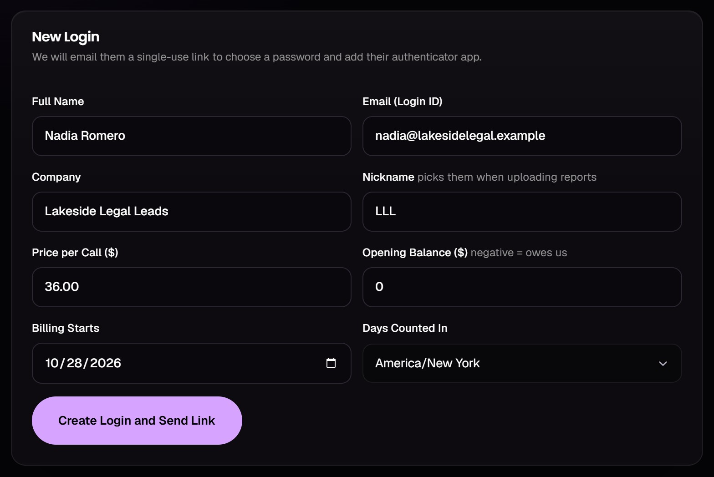
Press Create Login and Send Link. The buyer is emailed a single-use setup link that works for 7 days. The page shows the link too, with a Copy Link button, so you can also send it by Telegram or another channel.
If the box turns amber and says Not emailed, the email could not be sent. Copy the link and send it to the buyer yourself. It still works once, until the date shown.
Afterwards, staff can open the new buyer from Customers to correct their price, opening balance or start date under Billing Terms.
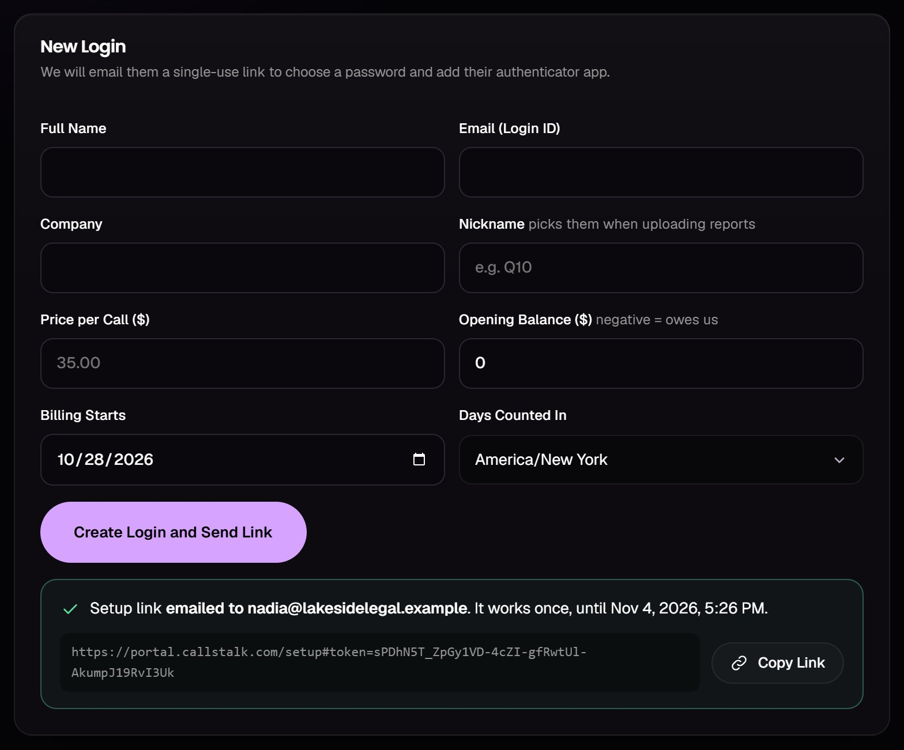
Open Settings in the top bar, or click your initial at the top right.
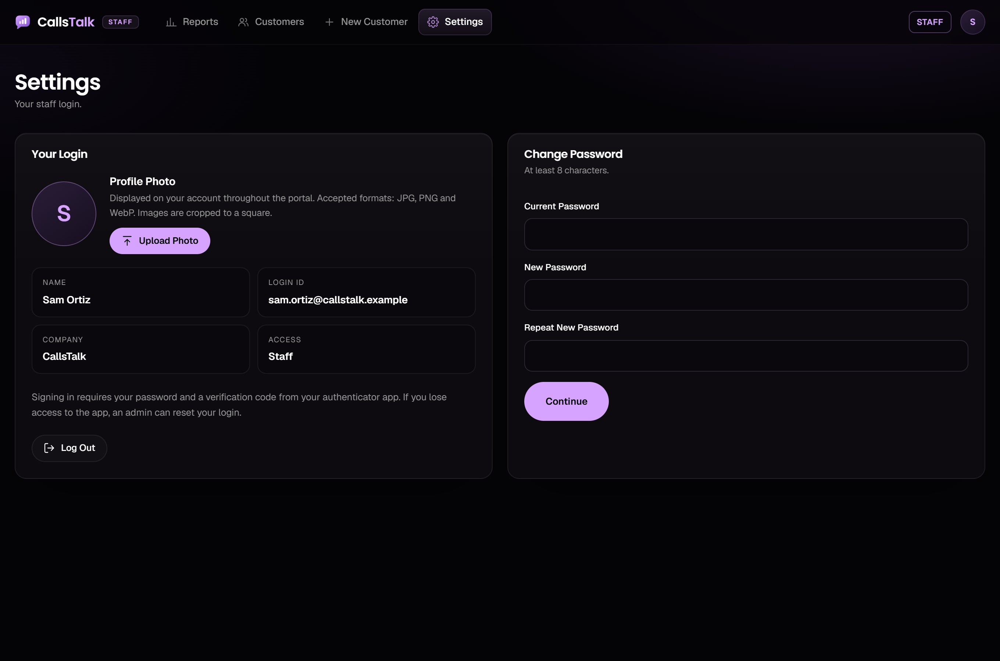
Admins also see Billing Notifications here (chapter 10).
One page holds everything about a buyer, in three tabs: Calls & Replacements (the day-to-day work), Billing & Payments, and Account (their login, contact methods, recent activity and the red Danger Zone). Admins open it from Logins. Staff open it from Customers.
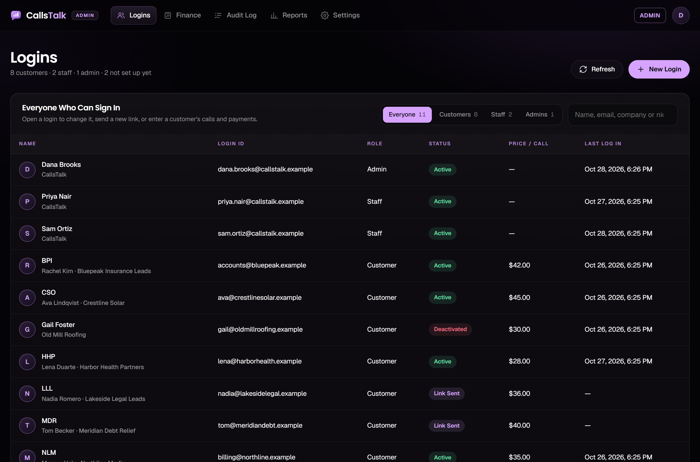
Use Everyone, Customers, Staff and Admins to filter, or search by name, email, company or nickname. A buyer's nickname shows after their company. The Status column shows where each login stands:
| Status | Meaning |
|---|---|
| Active | Set up and able to log in. |
| Link Sent | Created, but they haven't used their setup link yet. The link is still valid. |
| Link Expired | The setup link ran out (after 7 days) before they used it. Open the login and send a new one. |
| Deactivated | Turned off. They can't log in, and nothing is deleted. |
Press New Login and pick Customer, Staff or Admin. Customer logins need the billing fields described in chapter 3. Staff and admin logins only need a name and email. Company is optional for them.
Staff can upload and remove reports, add customers and work customers' pages. They can't open staff or admin logins, change roles, delete logins, or see Finance and the Audit Log. Admins can do everything.
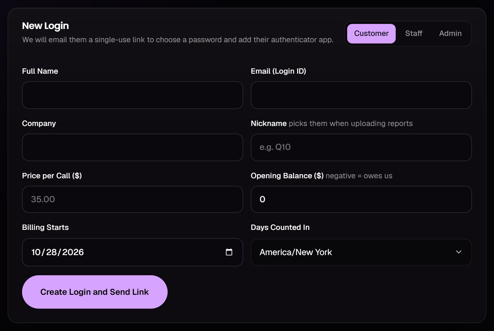
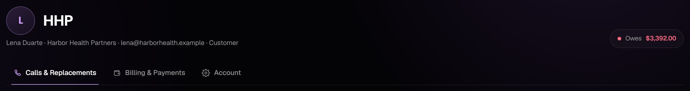
| Tab | What it holds |
|---|---|
| Calls & Replacements | Replaced Calls with its date filter (chapter 7), the Calls form and the daily table. |
| Billing & Payments | Billing Terms, Record a Payment, and the payments of the shown days. |
| Account | Details, Access, Contact Methods, Recent Activity, and the Danger Zone. |
The tab is kept in the address (for example ?tab=account), so a reload or a shared link opens the same tab. On a phone the tabs read Calls, Billing and Account.
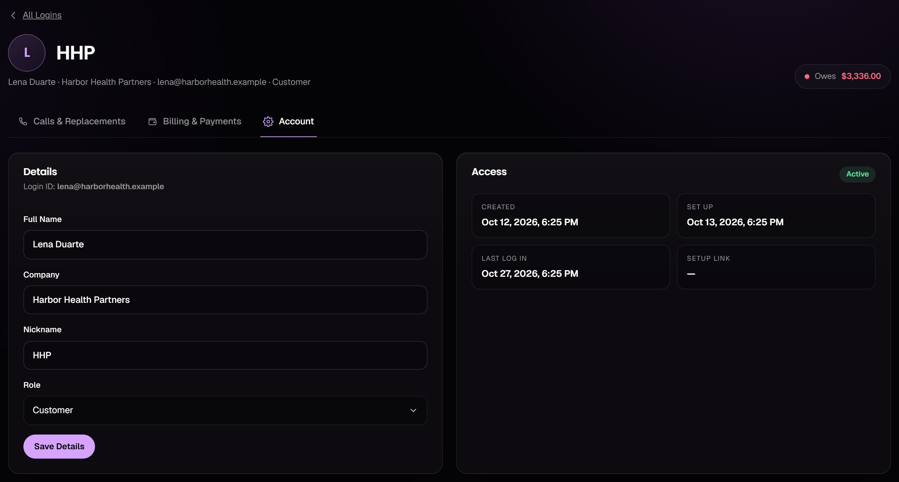
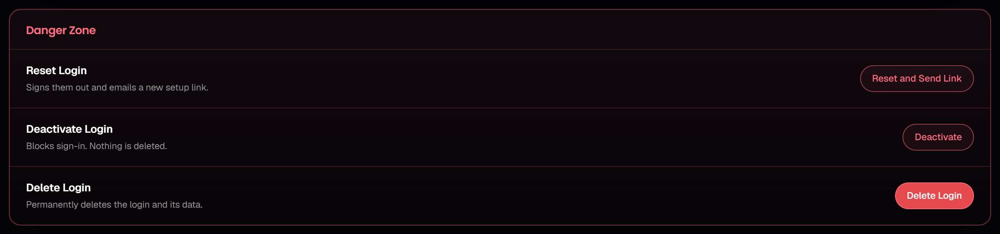
Everything that locks a person out or removes them sits apart, in red, at the foot of the Account tab. Each one asks you to confirm first.
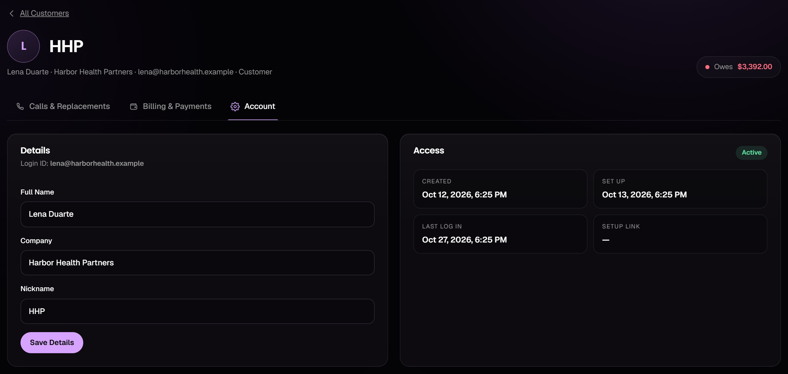
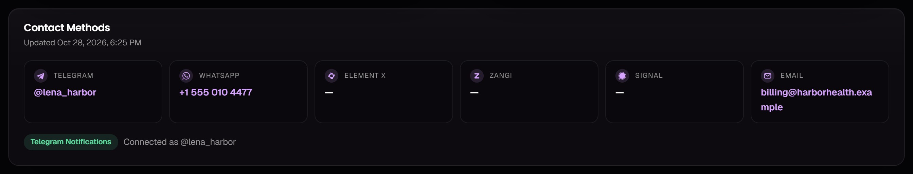
Contact Methods: extra channels the buyer added in their own Settings (Telegram, WhatsApp, Element X, Zangi, Signal, another email), and whether they connected Telegram for notices. Telegram and WhatsApp open as links.
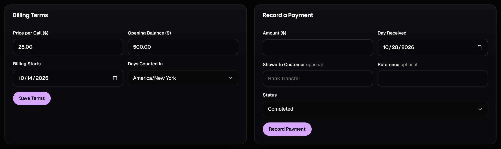
Billing Terms are the price per call, the opening balance on the start date, the start date and the time zone. A new price only applies to days entered from then on. Days already entered keep the price they were saved with (see Q&A).
Record a Payment is for money that didn't come in through the buyer's own USDT Pay button, for example a bank transfer. Enter the amount and the day it was received. Shown to Customer is the label the buyer sees, e.g. "Bank transfer". Reference is for our own records. Set Status:
A buyer's USDT payments through Pay Now are found and added automatically once confirmed on the blockchain. Recording the same payment by hand would count it twice.
Most days now get their calls from the buyer's Call Summary (chapter 6). The Calls card is for the days that have none, and for a day's price.
A day with a Call Summary shows from its Call Summaries beside Total Calls, which can't be typed over. Only its price can change (Save Price), and it can't be cleared. To change its calls, upload the corrected call log, or delete the wrong one.
Replacements are no longer typed here. They are the calls replaced one by one under Replaced Calls (chapter 7). You can change any day, even weeks later. That day's balance and every balance after it are recalculated straight away.
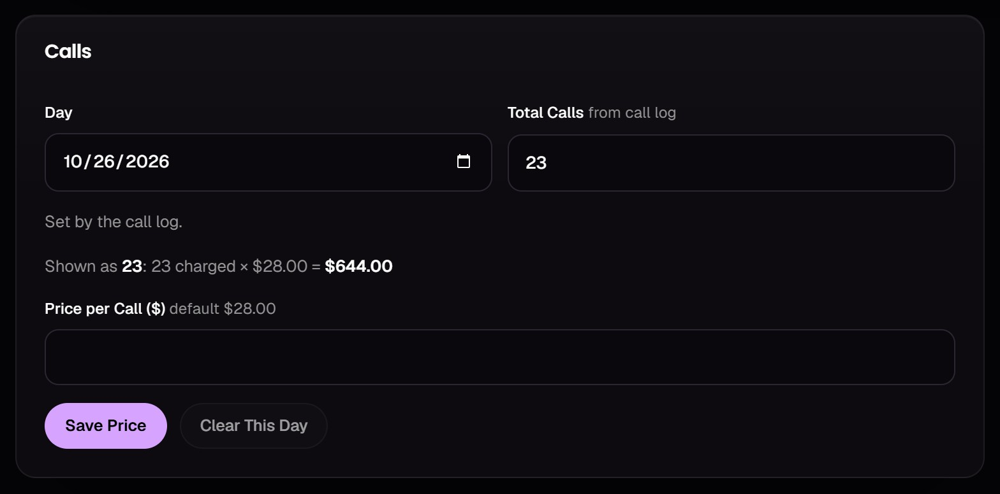
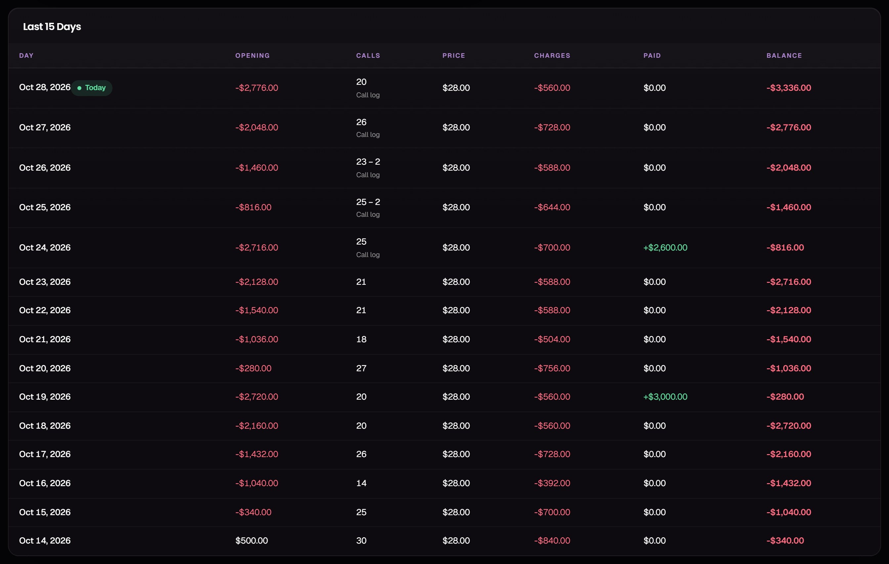
Each row reads left to right as a small sum: Opening - Charges + Paid = Balance, and the next day opens on that balance. The row for today is marked Today and changes as the day's call logs come in. Call log under a day's calls means they were counted from its Call Summaries. "23 − 2" means 23 calls with 2 replaced. Below the table, Payments lists the payments of those days with their status. Press × to delete one that was entered by mistake.
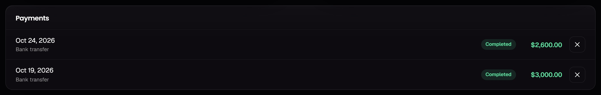
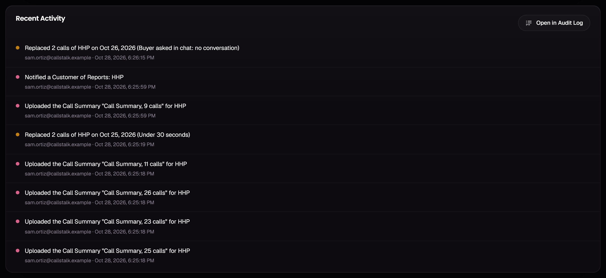
Recent Activity at the bottom lists the latest changes to this buyer and who made them, staff and admins alike. Admins can press Open in Audit Log for the full history.
A buyer's Call Summary is the record of their calls, so the portal bills from it. Uploading the day's call log sets that day's calls, and the balance follows at once. Nobody types the day's total.
| You... | The day's calls |
|---|---|
| Upload the morning's export, then the afternoon's | Both are counted, with no call twice. In the example, Harbor's Oct 28 had 11 calls from the morning file. The afternoon file added 9, making 20. |
| Upload the same file twice by mistake | Nothing changes: its calls are already counted. Delete the extra copy so the buyer doesn't see it twice. |
| Upload a corrected log that drops a wrong call | The wrong call still counts while the old log is there. Delete the wrong log first, then upload the corrected one. |
| Delete a Call Summary | Its days are counted again from the buyer's other Call Summaries. A day left with no calls is removed, unless it has replaced calls (they stay on record). |
| Upload a file in another layout | It is filed as it is, and the buyer can open it, but its calls aren't counted. The day keeps what it had. |
| Upload a file whose calls fall outside From and To | The upload is refused, naming the day. Correct From and To, or check the file. |
| Upload for a buyer with no billing terms yet | The calls are kept, and counted once the terms are set. |
Days before call logs were uploaded, or days a log is missing for, are typed in on the buyer's page under Calls, as before. Typed days and call-log days can sit side by side. In the example, Harbor's days up to Oct 23 were typed in, and Oct 24 onwards come from their logs.
Call Summaries uploaded before this change were filed, but their calls were never read. On the buyer's page, under Replaced Calls, pick a day it covers: such a report says Not in billing yet and has a Read Calls button. Press it to count its calls for those days, as a new upload would. Until then, those days keep the calls that were typed in, so past balances never change on their own.
Check the typed figure against the log before pressing it. If they differ, the log wins.
Each upload, Read Calls and deleted Call Summary records how it changed billing, one day per line, for example 2026-10-28: 11 to 20 calls, under Billing Days. "Who changed this day's calls?" always has an answer.
When a buyer disputes a call, they ask for a replacement in the portal chat. The team finds that call in the buyer's Call Summary and replaces it. It comes off that day's bill, and the record is kept on both sides.
Buyers use Chat With Us, at the bottom right of their portal, giving the call's time and caller number. The chat works as it always has: their messages reach the team as before, and the team answers in the chat. Their Billing page reminds them: "To have a call replaced, send us its time and caller number in the chat."
Buyers usually ask a day after the calls (within 24 hours). Some, such as HOZ, take up to 48 hours. Friday's calls are replaced on Monday and can run into Tuesday. So the card works from the day the calls were made, not the day the buyer asks.
A Call Summary that covers several days shows only the chosen day's calls; press All Days to see the rest.
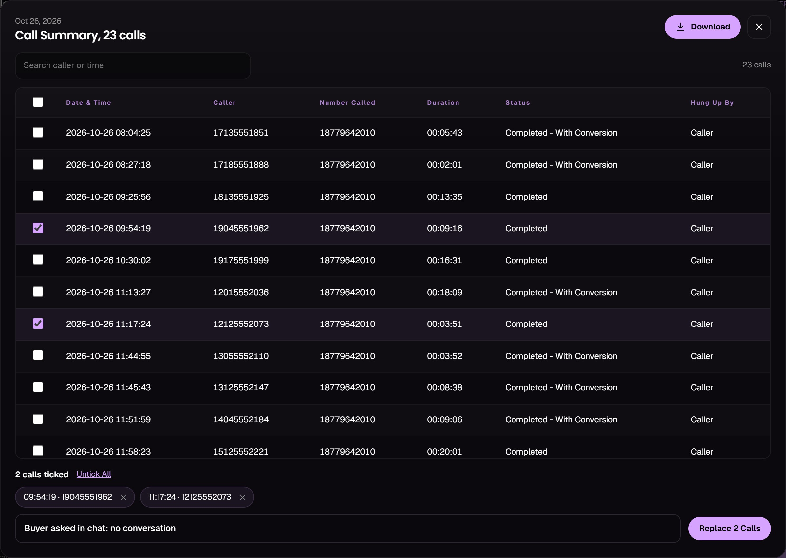
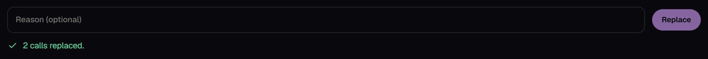
Each replaced call comes off the day's bill. In the example, Harbor's Oct 26 had 23 calls at $28. With 2 replaced it reads 23 − 2: 21 charged, $588.00 instead of $644.00. That day's balance and every later one go up by $56.00 at once. This is exactly the "125 − 2" of the old Telegram bill, now with the two calls named.
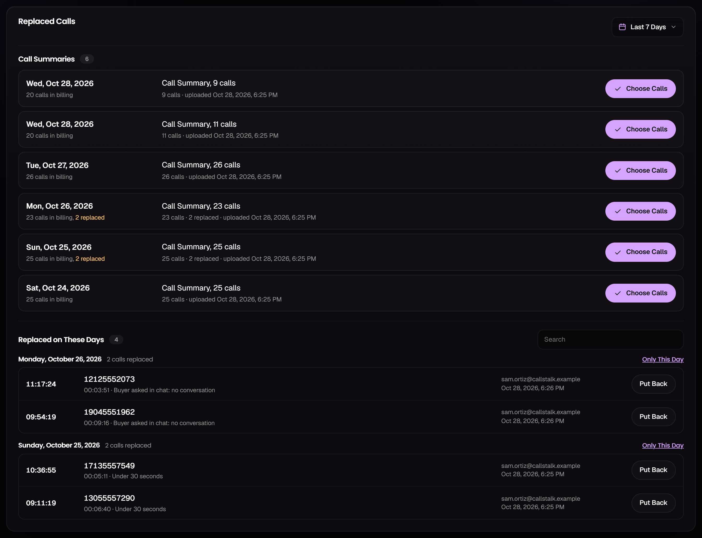
Press Put Back beside a replaced call and confirm. It is charged again, and the day goes back from "23 − 2" to "23 − 1". Use it only for a call replaced by mistake. The Audit Log keeps both steps.
For days with no call log, the team can upload a billing report and let the portal enter its calls, after checking them day by day. Staff and admins can both do it.
Only calls, replacements and price are read. The portal works out the charges and balances itself. Payments are never taken from a file. USDT deposits come in on their own and the team records the others, so reading payments from the file would count them twice.
| Mark | Meaning | Saved When Ticked? |
|---|---|---|
| Same | The file matches what billing already has. | No need, nothing changes |
| Changes | Billing has different figures for this day. The file's figures will replace them. In the example, Oct 22 gains 2 replacements: 40 becomes "40 − 2". | Yes |
| New | Billing has nothing for this day yet (Oct 23 in the example), or the day is older than 30 days and isn't compared. | Yes |
| Skipped | The day is before the buyer's billing start date, or in the future. | No |
Rows that can't be read, such as a non-date or non-whole numbers, are listed under the table as Not read: row 7 (reason). In the file, a day's calls can be written as 125 with a separate Replacements column, or as 125 - 2 meaning 125 calls with 2 replaced. If the price cell is empty or 0, the day keeps the price billing already has.
A day counted from its Call Summaries keeps their calls. If a billing report has a different total for it, that day is refused and listed after the upload as not entered. A report also can't lower a day's replacements below its replaced calls. Fix the call log instead, or put the calls back first.
That day is refused, not overwritten, and listed after the upload as not entered. Look at the buyer's page, then enter that day again.
Finance shows the money across all buyers, or one buyer, for any period of up to two years: what was billed, what came in, and who owes what. It follows exactly the same rules as each buyer's own bill, call logs and replaced calls included, so the two always agree.
Pick the period at the top: 7 Days, 30 Days, 90 Days, This Month, Last Month, or Custom dates. Use the customer menu to look at one buyer. Each buyer's days are counted in their own time zone.
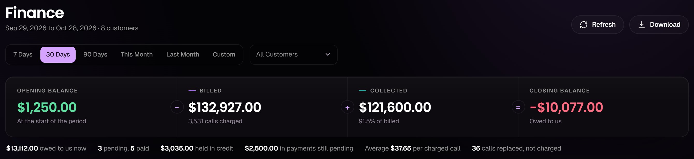
| Figure | What It Is | In the Example |
|---|---|---|
| Opening Balance | All buyers' balances added together on the day before the period starts. A buyer whose billing started inside the period counts with their own opening balance. | Bluepeak -$1,250 + Harbor +$500 + Crestline +$2,000 = $1,250 |
| Billed | Charges for the period: charged calls × each day's price. The small line shows how many calls were charged. | $132,927.00 for 3,531 calls |
| Collected | Completed payments received during the period. Pending and failed payments are not included. The percentage is Collected ÷ Billed. | $121,600 ÷ $132,927 = 91.5% |
| Closing Balance | All buyers' balances on the last day of the period. Negative means owed to us, positive means credit. | -$10,077.00, owed to us |
The line under the strip adds:
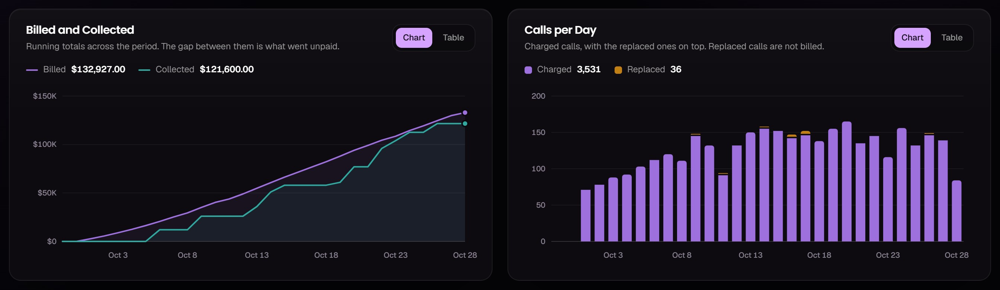
Billed and Collected adds up both amounts day by day. The gap between the two lines is what has gone unpaid in the period. Collected moves in steps because payments arrive on some days only. Calls per Day shows charged calls, with replaced calls stacked on top in amber. Hover a day to see its exact figures, or press Table to read the numbers.
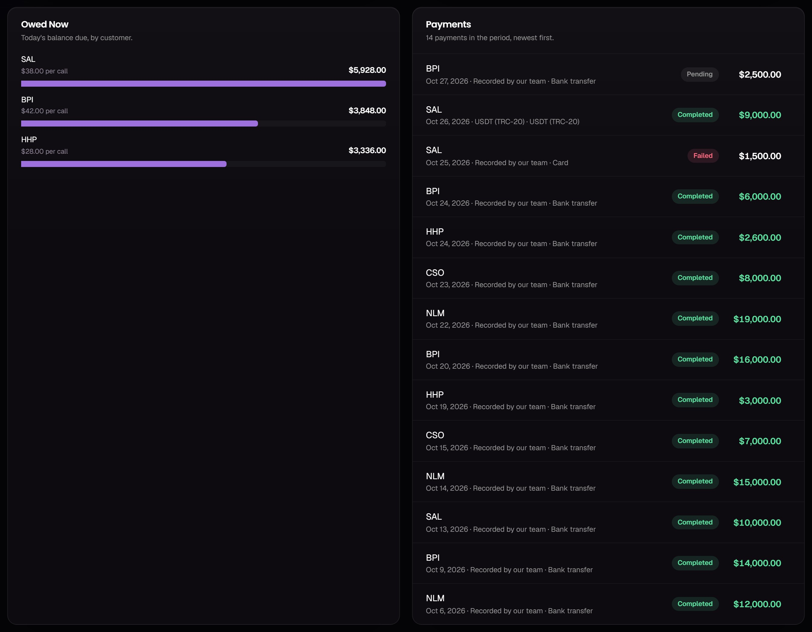
Owed Now lists today's balance due by buyer. Payments lists every payment in the period with its method, note and status. Click a buyer's name to open their page.
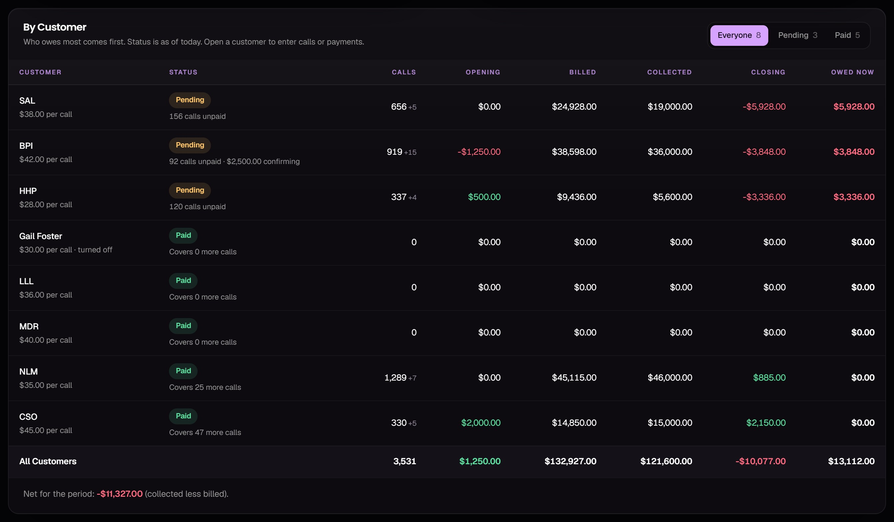
| Column | Meaning |
|---|---|
| Status | Pending means the buyer owes money today. The line under it shows how many calls that amount stands for, plus any payment still "confirming". Paid means they owe nothing today, and shows how many more calls their credit covers. Status is always as of today, whatever period you picked. |
| Calls | All calls in the period. The small figure beside them (+15 for Bluepeak) is the replaced calls among them, which aren't charged. |
| Opening / Closing | The buyer's balance at the start and end of the period. |
| Billed / Collected | Their charges and completed payments in the period. |
| Owed Now | What they owe today: today's balance turned positive, or $0 if they're in credit. |
Each row checks the same way as the totals. For Bluepeak: -$1,250.00 - $38,598.00 + $36,000.00 = -$3,848.00. At $42 a call, $3,848 stands for 3,848 ÷ 42 = 91.6, rounded up to 92 calls unpaid. Crestline is Paid with $2,150 of credit: 2,150 ÷ 45 = 47.8, so it covers 47 more calls. The Net for the period under the table is Collected - Billed: $121,600 - $132,927 = -$11,327.
Download gives the figures for the period and customer you picked:
Every download is recorded in the Audit Log.
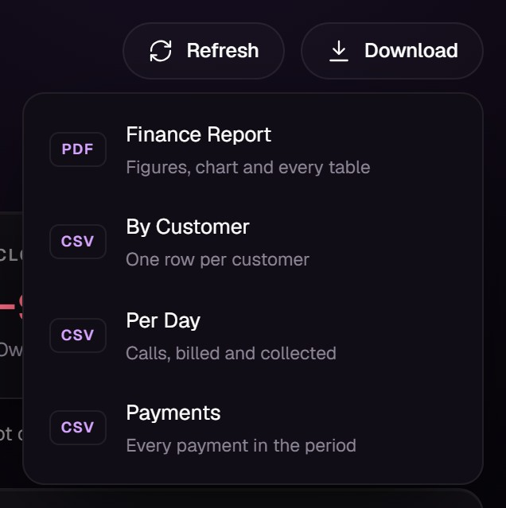
Every change made in the portal, every sign-in and every download, with who did it, when and from which address. Entries are kept for good and can't be edited.
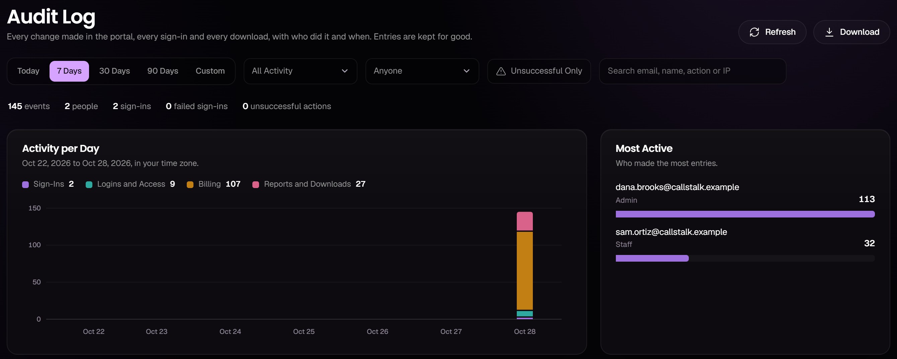
New entries in this version: Replaced Calls and Put Back a Replaced Call (with the calls, day and reason), Read a Call Summary into Billing, and the Billing Days an upload or deleted Call Summary changed.
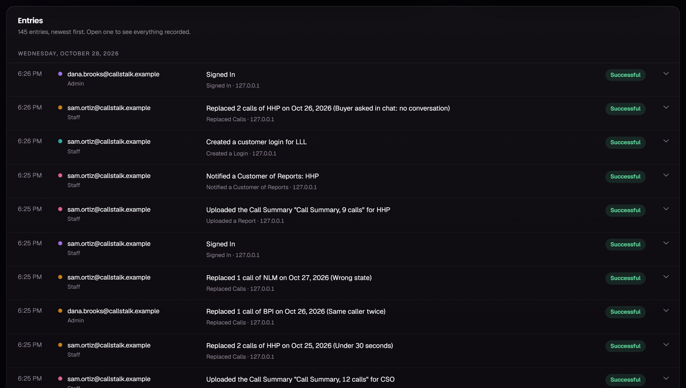
Admins choose who is told about buyers' payments, under Settings.
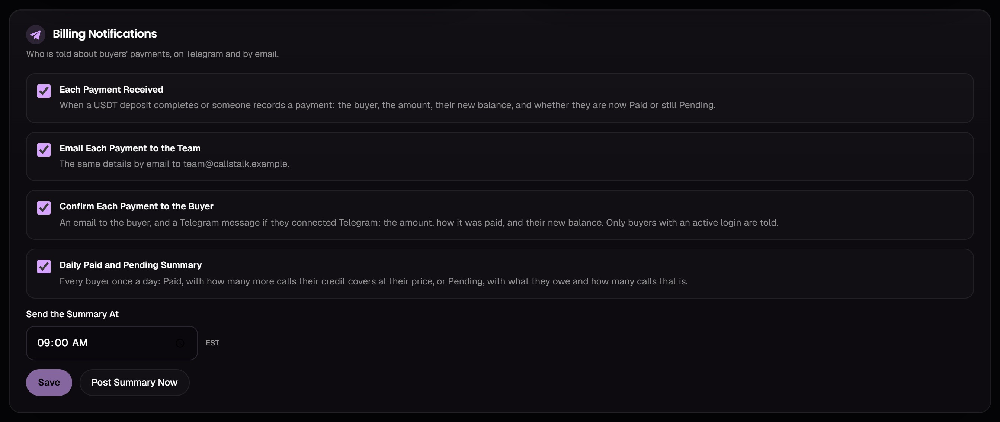
/buyers in the billing chat gives the same summary as of that moment.Notices never show a buyer's price per call, only call counts and amounts. Payments recorded by staff are announced the same way as an admin's.
Knowing the buyer's screen makes their questions easier to answer. Buyers see only their own account.
The page refreshes itself every 30 seconds while it's open, and whenever they come back to it, so a new call log, a replaced call or a recorded payment shows up without them doing anything.
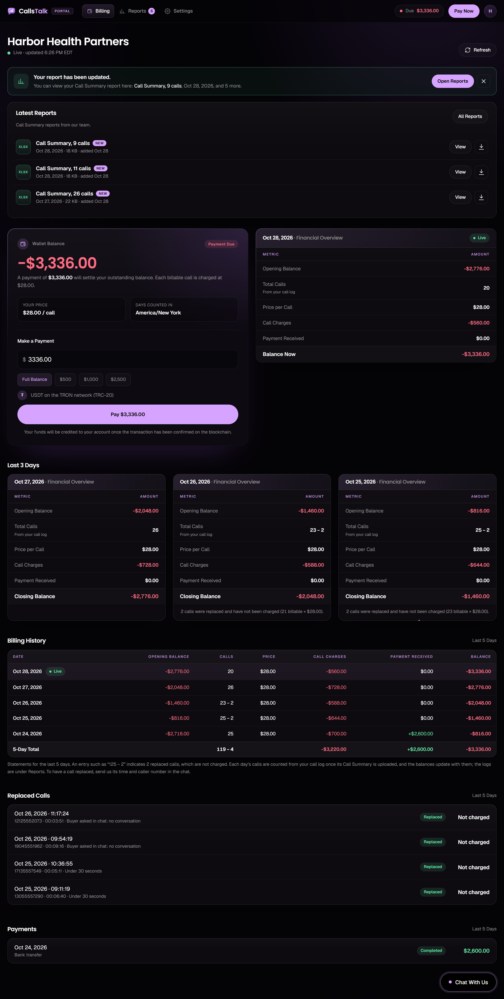
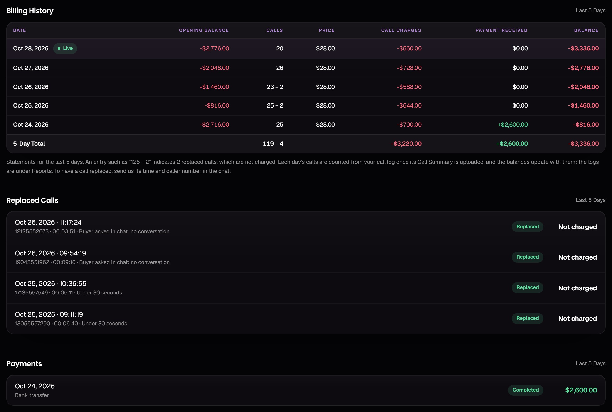
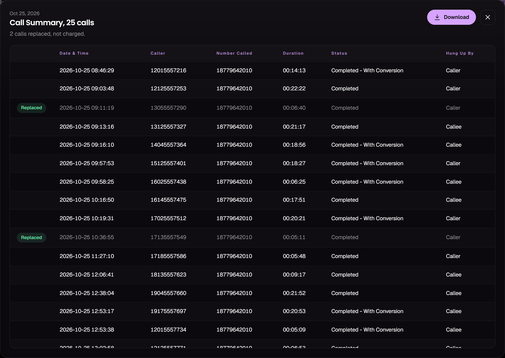
There are only four rules. The buyer's bill, the buyer's page, the Finance page, the downloads and the Telegram notices all use them, so they always agree.
Where the numbers come from: Total calls is counted from the day's Call Summaries, or typed in for a day without one. Replacements are the calls replaced at the buyer's request.
| Balance | Means | Shown As |
|---|---|---|
| Negative, e.g. -$3,336.00 | The buyer owes us $3,336.00. | Due / Owes / Pending |
| Zero | Nothing owed, no credit. | Paid |
| Positive, e.g. $2,150.00 | The buyer has $2,150.00 of credit for future calls. | In Credit / Paid |
| Day | Opening | Calls | Charged | Charges | Paid | Balance |
|---|---|---|---|---|---|---|
| Oct 24 | -$2,716.00 | 25 | 25 | -$700.00 | +$2,600.00 | -$816.00 |
| Oct 25 | -$816.00 | 25 − 2 | 23 | -$644.00 | $0.00 | -$1,460.00 |
| Oct 26 | -$1,460.00 | 23 − 2 | 21 | -$588.00 | $0.00 | -$2,048.00 |
| Oct 27 | -$2,048.00 | 26 | 26 | -$728.00 | $0.00 | -$2,776.00 |
| Oct 28 (today, live) | -$2,776.00 | 20 | 20 | -$560.00 | $0.00 | -$3,336.00 |
| 5-day total | 119 − 4 | 115 | -$3,220.00 | +$2,600.00 |
All five days come from Harbor's call logs. Oct 25: "25 − 2" means 25 calls, 2 of them replaced at Harbor's request, so 23 × $28 = $644 is charged. The 2 replaced calls cost nothing: without them the day would have cost $700.
Oct 24: -$2,716 - $700 + $2,600 = -$816. The payment covered most of what was owed.
Today: Harbor's morning log had 11 calls and the afternoon log 9, so today has 20 so far: 20 × $28 = $560, and -$2,776 - $560 = -$3,336. The buyer sees "Due $3,336.00", and paying $3,336 brings them back to $0.
Check from the totals: start -$2,716 - charges $3,220 + paid $2,600 = -$3,336. The same answer.
On Finance today, Harbor is Pending, 120 calls unpaid: $3,336 ÷ $28 = 119.1, rounded up to 120.
Open the buyer (staff: Customers; admins: Logins) and go down the daily table from the oldest day that looks wrong. For each row check: the calls (a Call log day against its Call Summaries, a typed day against our report), the replaced calls, the price, whether a payment is on the right day, and that each opening balance equals the day before's balance. Then check the Payments list for anything pending or failed. Those are never counted. Recent Activity on the page, and the Audit Log for admins, show who changed what and when.
The balance is from the buyer's side: what is left of the money they've paid in. Calls take money out, payments put money in. Below zero, they've used more than they paid. See "Reading the Sign" in chapter 12.
Each day opens on the day before's balance. Taking a call off one day's charges raises that day's balance and every balance after it, including today's, by the same amount. For example, replacing 2 calls at $28 makes that day $56 cheaper, and today's balance goes up by $56.
Nothing. Every day keeps the price it was saved with, so past bills don't change. The new price applies to new days. When you re-save an older day without typing a price, it keeps its old one. To bill a specific day at a different rate, type the price on that day under Calls (Save Price, for a call-log day).
Where they stand on the billing start date. Use a negative amount if they already owe us from before (e.g. -1250). Use a positive amount if they prepaid (e.g. 500). Otherwise use 0. Don't enter a prepayment as both an opening balance and a payment.
"Pending" is used in two ways. The Status Pending means the buyer owes money today. A pending payment is money on its way, shown as "$X confirming" under the status and in "payments still pending". A buyer can be Pending (owes) with no payment confirming, or have a payment confirming while still being Paid.
The amount is divided by the buyer's current price per call. What they owe is rounded up, because even part of a call is unpaid. Credit is rounded down, so only whole calls are covered. Bluepeak owes $3,848 at $42, which gives 91.6, shown as 92 calls unpaid. Crestline's credit of $2,150 at $45 gives 47.8, shown as covers 47 more calls.
It's every buyer's balance added together on the day before the period starts. Buyers who started inside the period count with their own opening balance. In the example, Bluepeak started at -$1,250, Harbor at +$500 and Crestline at +$2,000, the others at $0, giving $1,250. Closing Balance is the same total on the last day of the period.
For two reasons. First, Closing Balance is the end of the period you picked, while Owed Now is always today. Second, Closing Balance adds credit and debt together, so a buyer with credit cancels debt owed by another. Owed Now adds up only what the owing buyers owe ($13,112), and credit is shown separately as "held in credit" ($3,035). Here $3,035 - $13,112 = -$10,077, the Closing Balance, because the period ends today.
Collected ÷ Billed for the period: $121,600 ÷ $132,927 = 91.5%. Yes, it can be over 100%, for example when buyers pay off older debt or prepay during the period. Under 100% means less came in than was billed in that period.
Collected - Billed. Negative (-$11,327 in the example) means the buyers' balances went down by that much during the period, so more is owed at the end than at the start. Positive means debts were paid down or credit built up. It always equals Closing Balance - Opening Balance.
Download Per Day and Payments (CSV) for the same period and compare day by day.
Yes. Today is live: each call log uploaded during the day adds its calls, so today's charges and balance grow until the day ends. Finance totals for a period that includes today change too.
No. Only completed payments count, on the day they were received. Pending ones are shown so everyone knows money is on its way. Failed ones are kept for the record.
Its calls come from its Call Summaries (from its Call Summaries beside Total Calls). The log is the record, so it decides. To change the count, upload the corrected call log, or delete the wrong one. You can still change that day's price.
Usually only part of the day's log was uploaded, for example a morning export. Upload the rest: only its new calls are added. If it's today, the day isn't over yet.
Check the buyer's Call Summaries for that day. A wrong file, or one uploaded for the wrong buyer, still counts until it's deleted. Delete it and the day is counted again without it.
The day, the call's time and the caller's number. Under Replaced Calls, choose the dates of the call, open that day's Call Summary, search for the caller number, tick it and replace it (chapter 7). Reply in the chat once it's done. Their bill already shows it.
Then it isn't billed from a log. Check the day: if it was typed in (no Call log under its calls), there is nothing to tick. A replacement on a typed day can only come from a billing report's "125 − 2" (chapter 8). Upload the day's call log first if you have it.
Press Put Back beside it under Replaced Calls, then replace the right one. Both steps are in the Audit Log.
No. The portal refuses a replacement above the day's calls, whether chosen from a log or read from a billing report.
It's gone. Replacements now name the calls they take off, so the buyer and the team see the same thing. They come from Replaced Calls, or from a billing report.
Their Billing page shows the last five days, today included. Older days are in their Call Summary reports, and our team keeps the billing reports. If they need older figures, an admin can download Finance for that buyer and period.
125 calls that day, 2 of them replaced. Replaced calls aren't charged, so the buyer pays for 123. The 2 calls are listed under Replaced Calls on their Billing page, and marked in that day's Call Summary.
Pay Now in their portal, in USDT on the TRON network (TRC-20), to their own deposit address. They should send on TRC-20 only. The balance updates once the transaction is confirmed. For any other method, the team records the payment by hand once the money has arrived.
Check the email went to their Login ID, and ask them to check spam. The email has a button that opens the report, and the file isn't attached. The report is in their portal under Reports either way. For Telegram notices, they have to connect Telegram under Settings in their portal first. The buyer list on the upload form shows · Telegram for those who have.
Delete it from the Uploaded list straight away with × and confirm. The buyer can no longer see it, and its calls come off their billing. Upload the right one. Untick the email if they've already been told about the date.
Yes. Choose several files together. Each file keeps its own name as the title, each sets its own days, and the buyer gets one notice for the whole upload.
Only .xlsx, .xls and .csv files of 3 MB or less are accepted, and From must not be after To. A Call Summary whose calls fall on days outside From and To is refused: the message names the day. If the button says Reading the File..., wait. The first file of a session takes a moment longer.
Yes, since version 2. Staff can tick Enter these calls in the customer's billing, just as admins can.
First check your phone's clock is set automatically, because codes depend on the time. If that doesn't help, ask an admin to reset your login (your page → Account → Danger Zone). You'll set a new password and scan a new QR code. Admins can't reset their own login, so another admin has to do it.
Open the buyer (staff: Customers; admins: Logins), go to Account and press Send Setup Link in the Danger Zone.
Usually Deactivate. They can't log in, but their billing, payments and reports stay for our records and Finance. Delete removes all of that for good, and only admins can do it.
Someone else changed the same thing at the same moment. Your change was not saved, and the page now shows the latest. Check it, then make your change again.
Recent Activity at the bottom of the buyer's page shows the latest changes and who made them. Admins have the full history in the Audit Log: filter by the buyer or the person, or press Open in Audit Log on the buyer's page.
| I Want To... | Go To |
|---|---|
| Upload a Call Summary or billing report | Reports → Upload a Report |
| Add a buyer | Staff: New Customer · Admins: Logins → New Login → Customer |
| Open a buyer's page | Staff: Customers → the buyer's name · Admins: Logins → the buyer |
| Give a buyer a nickname | Staff: Customers · Admins: the buyer → Details |
| Replace a call the buyer asked about | The buyer → Calls & Replacements → the dates of the calls → Choose Calls |
| Put a replaced call back | The buyer → Replaced Calls → Put Back beside the call |
| Count an old Call Summary's calls | The buyer → Replaced Calls → Read Calls |
| Enter or correct a day with no call log | The buyer → Calls, or a billing report upload |
| Correct a day from a call log | Reports: delete the wrong Call Summary, upload the right one |
| Record a bank transfer | The buyer → Record a Payment |
| Change a buyer's price | The buyer → Billing Terms |
| Reset a buyer's login | The buyer → Account → Danger Zone → Reset and Send Link |
| Add a staff member or admin | Logins → New Login → Staff / Admin (admins) |
| See who owes what | Finance → Owed Now / By Customer (admins) |
| Download figures for accounts | Finance → Download (admins) |
| See who changed something | The buyer → Recent Activity · Audit Log (admins) |
| Turn payment notices on or off | Settings → Billing Notifications (admins) |
| Change my password or photo | Settings |
| Login ID | The email someone logs in with. Report notices and setup links go to it. |
| Nickname | The team's short name for a buyer, e.g. HHP. It picks them when uploading. |
| Call Summary | The day's call log, shown to the buyer. Its calls set the day's calls in billing. |
| Call-log day | A day whose calls are counted from its Call Summaries, marked "Call log" (team) or "From your call log" (buyer). |
| Billing Report | The team's own record of daily bills. Never shown to the buyer. |
| Replaced call | A call the buyer asked about and the team took off the bill. Written "125 − 2". Listed for the buyer and the team. |
| Read Calls | Counts the calls of a Call Summary uploaded before version 2 into billing. |
| Charged calls | Total calls minus replaced calls. |
| Opening balance | The balance at the start of a day: the day before's balance, or the starting balance on the first day. |
| Balance | Opening - charges + completed payments. Negative means owed to us, positive means credit. |
| Amount due / Owed now | A negative balance without its minus sign. $0 when in credit. |
| Paid / Pending (status) | Whether a buyer owes nothing (Paid) or owes money (Pending) today. |
| Pending payment | A payment on its way, not counted yet. Shown as "confirming". |
| Collected | Completed payments received in a period. |
| Collection rate | Collected ÷ Billed for the period. |
| Net for the period | Collected - Billed. Equals Closing - Opening. |
| Days Counted In | The buyer's time zone. It decides which day calls and payments fall on. |
| Setup link | A single-use link, valid 7 days, to choose a password and add the authenticator app. |
Staff and admins can trace every figure through the buyer's daily table, their Call Summaries, their Replaced Calls and Recent Activity. Admins also have the Audit Log. Questions about roles or deleting a login go to an admin.